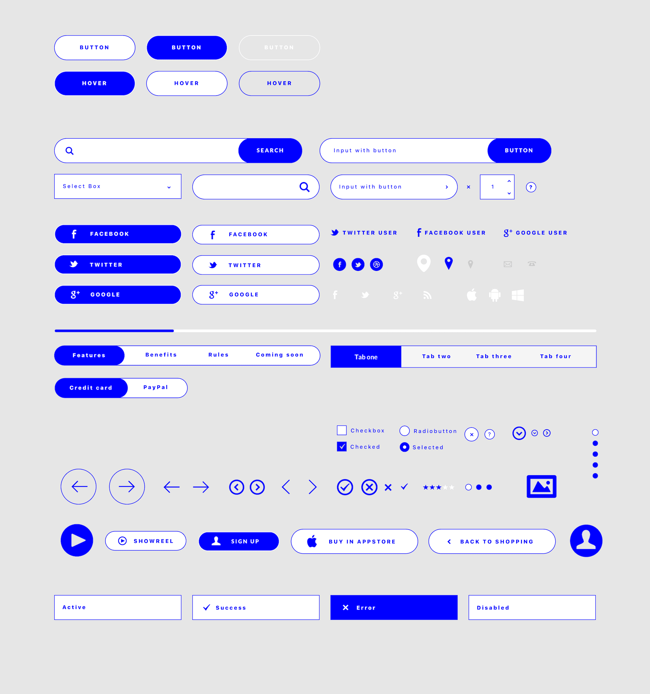
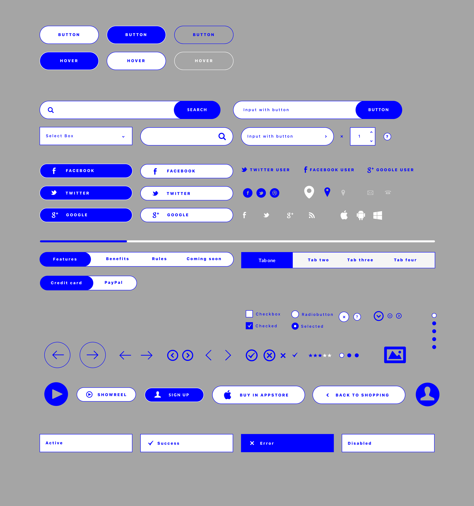

web & UI
Liu Liang Yin
About & CV
previous


UI Components Design
UI components 設計練習。
復古配色的介面設計。以藍色為主色，白色、灰色為輔助色。
Practices of UI components.
Designed with vintage colors. Blue is the prevailing color, gray and white are complementary colors.
UI design
graphic design
next